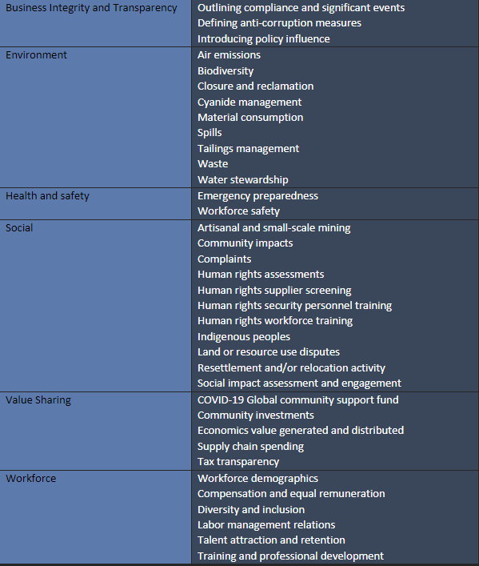
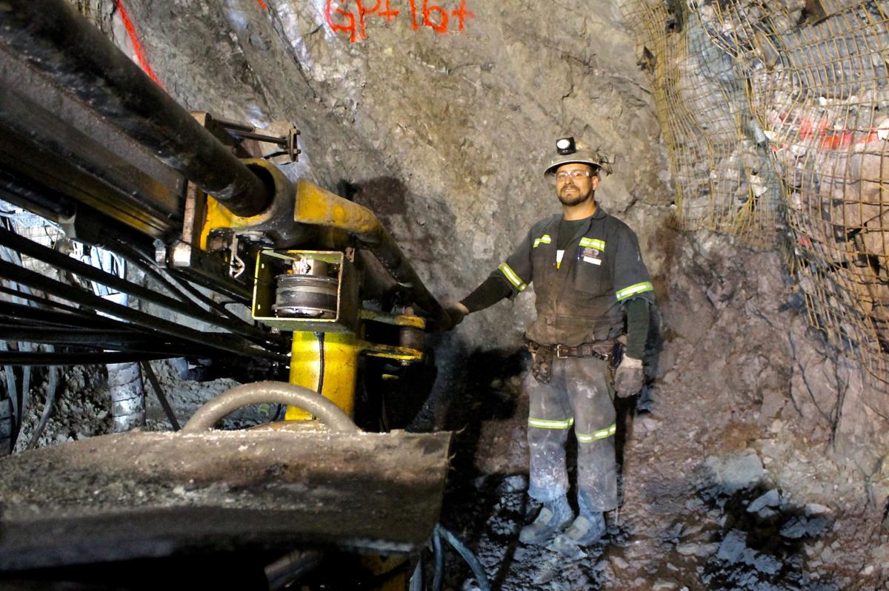

Standards
At Newmont Mining, performance impacts everything.
The data collected from various categories including business integrity and transparency, environment, health and safety, social, value sharing, and workforce reflect not only Newmont’s sustainability performance, but the entire operation of the company. By aligning the company’s best practices with a high priority for community engagement and safety, Newmont can make a significant contribution to today’s environmental and social landscape. This can be achieved through drawing inspiration from established standards and frameworks and avoiding any controversial frameworks and STRs that may not provide the best view on CSR.
Our Major Standards
- International Council on Mining and Metals (ICMM)
- International Labour Organization (ILO)
- Global Reporting Initiative (GRI)
- Global Industry Standard on Tailings Management (GISTM)
- ̶E̶n̶v̶i̶r̶o̶n̶m̶e̶n̶t̶a̶l̶ ̶I̶m̶p̶a̶c̶t̶ ̶A̶s̶s̶e̶s̶s̶m̶e̶n̶t̶ (EIA) REMOVED

Removal of EIA
After our team's recent research, we've come across a contentious framework frequently employed in the mining industry. In light of this discovery, we are committed to either completely avoiding its use or clearly articulating our intent to revise it in our final report. Specifically, our concern lies with the Environmental Impact Assessments (EIAs), as highlighted by Li, which exhibit significant shortcomings by prioritizing mining profits over community health and wellbeing (Li, 2009: 281). In addressing this issue, our approach is to consider alternative standards for evaluating the impact on local communities. We are exploring the adoption of internationally recognized standards, such as those established by the Organization for Standardization (ISO), renowned for providing high-quality environmental standards. This shift aims to prioritize the wellbeing of local communities, aligning with our commitment to responsible and sustainable practices in the mining sector.
Criterion in Practice
In our roles as CSR professionals, upon reviewing our sustainability performance assessment practices, we employ a robust internal audit system to evaluate our adherence to sustainability standards. For comprehensive and impartial evaluations, we consistently collaborate with third-party entities. Notably, PricewaterhouseCoopers (PwC) conducts independent assessments of our annual sustainability report, climate report, and risk management system. In a recent development, we engaged Business for Social Responsibility (BSR) to perform a living wage analysis in countries where we have full-time employees. Furthermore, we rely on various third-party affiliates specializing in risk assessment, human rights evaluation, structural engineering, auditing, and consulting to conduct thorough reviews alongside our internal teams. These external assessments, crucial for fostering transparency and trust among our stakeholders, investors, customers, and communities, incorporate key frameworks such as the Global Reporting Initiative (GRI), Sustainable Accounting Standards Board (SASB), Task Force on Climate-Related Financial Disclosures (TCFD), among others. GRI, a widely utilized framework, guides organizations in reporting on diverse aspects of sustainability. SASB focuses on industry-specific standards, addressing issues pertinent to the extractive industry, including water management, community relations, and biodiversity. TCFD, essential for disclosing climate change risks, holds particular significance in the mining industry. Given our standing as one of the largest mining corporations globally, adherence to government oversight and regulatory requirements is paramount. Particularly concerning our business partners and governmental regulations, compliance with regulations and permitting is a key concern. In navigating the challenges of this industry, our operations are committed to meeting legal, environmental, and social requirements, aiming to champion environmental justice and uphold accountability and transparency.
